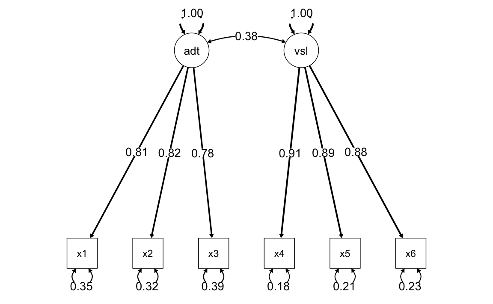
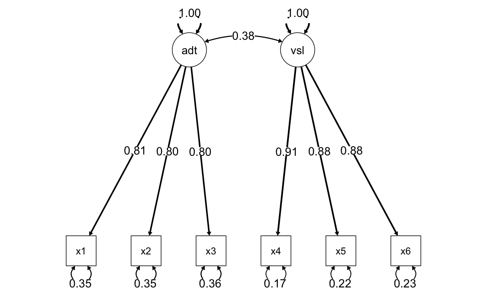
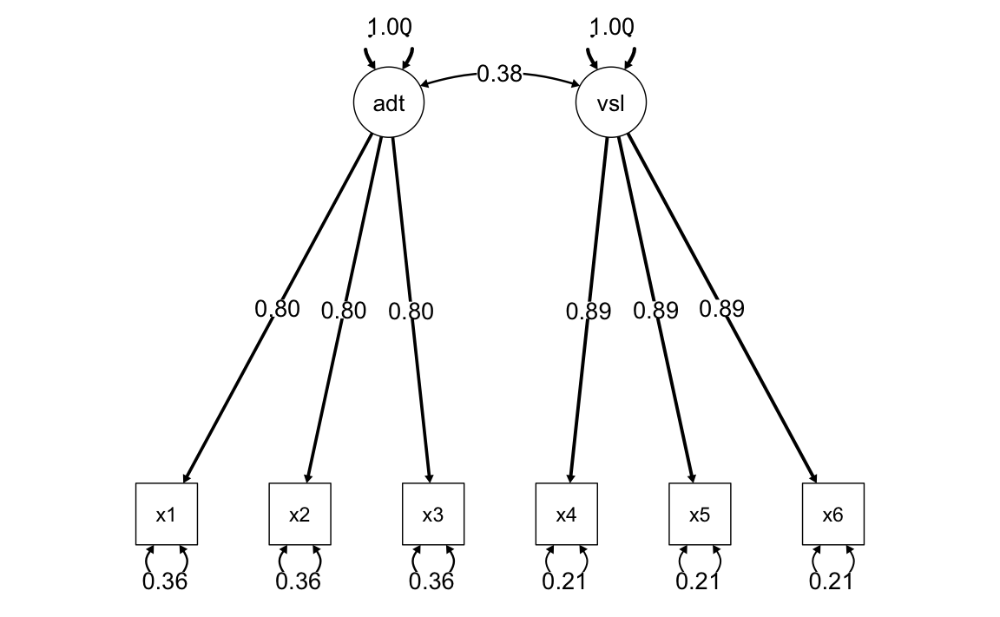

here::here("code", "_common.R") |>
source()
# Load packages
if (!requireNamespace("pacman")) install.packages("pacman")
pacman::p_load(lavaan, semPlot)52 CFA: confronto tra modelli
In questo capitolo imparerai a:
- effettuare il confronto tra diversi modelli di CFA.
Prerequisiti
- Leggere il capitolo Structural Equation Modeling del testo di Petersen (2024).
Preparazione del Notebook
52.1 Introduzione
In un modello CFA, i parametri possono essere stimati senza vincoli, possono essere fissi o possono essre stimati sulla base di alcuni vincoli. Un parametro libero è sconosciuto e il ricercatore consente all’algoritmo di stima di trovare il suo valore ottimale che, insime agli altri parametri del modello, riduce al minimo le differenze tra le matrici di varianze-covarianze osservate e quelle predette dal modello. Un parametro fisso è pre-specificato dal ricercatore ad un valore specifico, più comunemente 1.0 (ad esempio, per definire la metrica di una variabile latente) o 0 (ad esempio, l’assenza di saturazionoi fattoriali o di covarianze di errore). Come per un parametro libero, anche un parametro vincolato è sconosciuto; tuttavia, un tale parametro non può assumere un valore qualsiasi, ma deve rispettare le restrizioni su suoi valori che il ricercatore ha imposto. I vincoli più comuni sono i vincoli di uguaglianza, in cui i parametri non standardizzati devono assumere valori uguali (ad esempio, in diversi gruppi).
Consideriamo un esempio discusso da Brown (2015). Viene qui esaminato un set di dati in cui le prime tre misure osservate (X1, X2, X3) sono indicatori di un costrutto latente corrispondente alla Memoria uditiva e il secondo insieme di misure (X4, X5, X6) sono indicatori di un altro costrutto latente, Memoria visiva. Le tre misure usate quali indicatori del costrutto di memoria uditiva sono:
- X1 = memoria logica,
- X2 = associazione verbale a coppie,
- X3 = liste di parole;
le tre misure usate come indicatori del costrutto di memoria visiva sono:
- X4 = immagini di facce,
- X5 = foto di famiglia,
- X6 = generiche riproduzioni visive.
I dati sono i seguenti:
sds <- '2.610 2.660 2.590 1.940 2.030 2.050'
cors <-'
1.000
0.661 1.000
0.630 0.643 1.000
0.270 0.300 0.268 1.000
0.297 0.265 0.225 0.805 1.000
0.290 0.287 0.248 0.796 0.779 1.000'
covs <- getCov(cors, sds = sds, names = paste("x", 1:6, sep = ""))
print(covs)
#> x1 x2 x3 x4 x5 x6
#> x1 6.81 4.59 4.26 1.37 1.57 1.55
#> x2 4.59 7.08 4.43 1.55 1.43 1.57
#> x3 4.26 4.43 6.71 1.35 1.18 1.32
#> x4 1.37 1.55 1.35 3.76 3.17 3.17
#> x5 1.57 1.43 1.18 3.17 4.12 3.24
#> x6 1.55 1.57 1.32 3.17 3.24 4.20Adattiamo i cinque modelli discussi da Brown (2015).
52.2 Modello congenerico
model.congeneric <- '
auditorymemory =~ x1 + x2 + x3
visualmemory =~ x4 + x5 + x6
'fit.congeneric <- cfa(
model.congeneric,
sample.cov = covs,
sample.nobs = 200,
std.lv = TRUE
)L’output si ottiene con:
summary(
fit.congeneric,
fit.measures = TRUE,
standardized = TRUE,
rsquare = TRUE
)
#> lavaan 0.6-19 ended normally after 21 iterations
#>
#> Estimator ML
#> Optimization method NLMINB
#> Number of model parameters 13
#>
#> Number of observations 200
#>
#> Model Test User Model:
#>
#> Test statistic 4.877
#> Degrees of freedom 8
#> P-value (Chi-square) 0.771
#>
#> Model Test Baseline Model:
#>
#> Test statistic 719.515
#> Degrees of freedom 15
#> P-value 0.000
#>
#> User Model versus Baseline Model:
#>
#> Comparative Fit Index (CFI) 1.000
#> Tucker-Lewis Index (TLI) 1.008
#>
#> Loglikelihood and Information Criteria:
#>
#> Loglikelihood user model (H0) -2337.980
#> Loglikelihood unrestricted model (H1) -2335.541
#>
#> Akaike (AIC) 4701.959
#> Bayesian (BIC) 4744.837
#> Sample-size adjusted Bayesian (SABIC) 4703.652
#>
#> Root Mean Square Error of Approximation:
#>
#> RMSEA 0.000
#> 90 Percent confidence interval - lower 0.000
#> 90 Percent confidence interval - upper 0.057
#> P-value H_0: RMSEA <= 0.050 0.929
#> P-value H_0: RMSEA >= 0.080 0.010
#>
#> Standardized Root Mean Square Residual:
#>
#> SRMR 0.012
#>
#> Parameter Estimates:
#>
#> Standard errors Standard
#> Information Expected
#> Information saturated (h1) model Structured
#>
#> Latent Variables:
#> Estimate Std.Err z-value P(>|z|) Std.lv Std.all
#> auditorymemory =~
#> x1 2.101 0.166 12.663 0.000 2.101 0.807
#> x2 2.182 0.168 12.976 0.000 2.182 0.823
#> x3 2.013 0.166 12.124 0.000 2.013 0.779
#> visualmemory =~
#> x4 1.756 0.108 16.183 0.000 1.756 0.907
#> x5 1.795 0.115 15.608 0.000 1.795 0.887
#> x6 1.796 0.117 15.378 0.000 1.796 0.878
#>
#> Covariances:
#> Estimate Std.Err z-value P(>|z|) Std.lv Std.all
#> auditorymemory ~~
#> visualmemory 0.382 0.070 5.463 0.000 0.382 0.382
#>
#> Variances:
#> Estimate Std.Err z-value P(>|z|) Std.lv Std.all
#> .x1 2.366 0.372 6.365 0.000 2.366 0.349
#> .x2 2.277 0.383 5.940 0.000 2.277 0.323
#> .x3 2.621 0.373 7.027 0.000 2.621 0.393
#> .x4 0.662 0.117 5.668 0.000 0.662 0.177
#> .x5 0.877 0.134 6.554 0.000 0.877 0.214
#> .x6 0.956 0.139 6.866 0.000 0.956 0.229
#> auditorymemory 1.000 1.000 1.000
#> visualmemory 1.000 1.000 1.000
#>
#> R-Square:
#> Estimate
#> x1 0.651
#> x2 0.677
#> x3 0.607
#> x4 0.823
#> x5 0.786
#> x6 0.771Il diagramma di percorso del modello è il seguente.
semPaths(
fit.congeneric,
"std",
posCol = c("black"),
edge.label.cex = 1.2,
sizeMan = 7,
edge.width = 0.4, # Set a fixed width for all arrows
fade = FALSE # Disable fading of the arrows
)
52.3 Modello tau-equivalente
Solo memoria auditiva:
model.tau.a <- '
auditorymemory =~ x1 + v1*x1 + v1*x2 + v1*x3
visualmemory =~ x4 + x5 + x6
'fit.tau.a <- cfa(
model.tau.a,
sample.cov = covs,
sample.nobs = 200,
std.lv = TRUE
)Memoria auditiva e visiva:
model.tau.av <- '
auditorymemory =~ NA*x1 + v1*x1 + v1*x2 + v1*x3
visualmemory =~ NA*x4 + v2*x4 + v2*x5 + v2*x6
'fit.tau.av <- cfa(
model.tau.av,
sample.cov = covs,
sample.nobs = 200,
std.lv = TRUE
)semPaths(
fit.tau.av,
"std",
posCol = c("black"),
edge.label.cex = 1.2,
sizeMan = 7,
edge.width = 0.4, # Set a fixed width for all arrows
fade = FALSE # Disable fading of the arrows
)
52.4 Modello parallelo
Solo memoria auditiva:
model.parallel.a <- '
auditorymemory =~ x1 + v1*x1 + v1*x2 + v1*x3
visualmemory =~ x4 + v2*x4 + v2*x5 + v2*x6
x1 ~~ v3 * x1
x2 ~~ v3 * x2
x3 ~~ v3 * x3
'fit.parallel.a <- cfa(
model.parallel.a,
sample.cov = covs,
sample.nobs = 200,
std.lv = TRUE
)Memoria auditiva e visiva:
model.parallel.av <- '
auditorymemory =~ x1 + v1*x1 + v1*x2 + v1*x3
visualmemory =~ x4 + v2*x4 + v2*x5 + v2*x6
x1 ~~ v3 * x1
x2 ~~ v3 * x2
x3 ~~ v3 * x3
x4 ~~ v4 * x4
x5 ~~ v4 * x5
x6 ~~ v4 * x6
'fit.parallel.av <- cfa(
model.parallel.av,
sample.cov = covs,
sample.nobs = 200,
std.lv = TRUE
)semPaths(
fit.parallel.av,
"std",
posCol = c("black"),
edge.label.cex = 1.2,
sizeMan = 7,
edge.width = 0.4, # Set a fixed width for all arrows
fade = FALSE # Disable fading of the arrows
)
52.5 Il test del \(\chi^2\)
Il confronto tra modelli nidificati procede attraverso il test \(\chi^2\). Tale test si basa su una proprietà delle variabili casuali distribuite come \(\chi^2\): la differenza tra due v.c. \(X_1\) e \(X_2\) che seguono la distribuzione \(\chi^2\), rispettivamente con \(\nu_1\) e \(\nu_2\), con \(\nu_1 > \nu_2\), è una variabile causale che segue la distribuzione \(\chi^2\) con gradi di libertà pari a \(\nu_1 - \nu_2\).
Un modello nidificato è un modello che impone dei vincoli sui parametri del modello di partenza. L’imposizione di vincoli sui parametri ha la conseguenza che vi sarà un numero minore di parametri da stimare. Il confronto tra i modelli si esegue valutando in maniera relativa la bontà di adattamento di ciascun modello per mezzo della statistica chi-quadrato. La statistica così calcolata avrà un numero di gradi di libertà uguale alla differenza tra i gradi di libertà dei due modelli.
Nel caso dell’esempio in dicussione, abbiamo
out = anova(
fit.congeneric,
fit.tau.a,
fit.tau.av,
fit.parallel.a,
fit.parallel.av,
test = "chisq"
)
print(out)
#>
#> Chi-Squared Difference Test
#>
#> Df AIC BIC Chisq Chisq diff RMSEA Df diff Pr(>Chisq)
#> fit.congeneric 8 4702 4745 4.88
#> fit.tau.a 10 4699 4735 5.66 0.78 0.000 2 0.68
#> fit.tau.av 12 4695 4725 5.88 0.22 0.000 2 0.90
#> fit.parallel.a 14 4691 4714 5.98 0.10 0.000 2 0.95
#> fit.parallel.av 16 4690 4707 9.28 3.30 0.057 2 0.19I test precedenti indicano come non vi sia una perdita di adattamento passando dal modello congenerico al modello più restrittivo (ovvero, il modello parallelo per entrambi i fattori). Per questi dati, dunque, può essere adottato il modello più semplice, cioè il modello parallelo.
Informazioni sull’Ambiente di Sviluppo
sessionInfo()
#> R version 4.4.2 (2024-10-31)
#> Platform: aarch64-apple-darwin20
#> Running under: macOS Sequoia 15.3.1
#>
#> Matrix products: default
#> BLAS: /Library/Frameworks/R.framework/Versions/4.4-arm64/Resources/lib/libRblas.0.dylib
#> LAPACK: /Library/Frameworks/R.framework/Versions/4.4-arm64/Resources/lib/libRlapack.dylib; LAPACK version 3.12.0
#>
#> locale:
#> [1] C/UTF-8/C/C/C/C
#>
#> time zone: Europe/Rome
#> tzcode source: internal
#>
#> attached base packages:
#> [1] stats graphics grDevices utils datasets methods base
#>
#> other attached packages:
#> [1] ggokabeito_0.1.0 see_0.10.0 MASS_7.3-64 viridis_0.6.5
#> [5] viridisLite_0.4.2 ggpubr_0.6.0 ggExtra_0.10.1 gridExtra_2.3
#> [9] patchwork_1.3.0 bayesplot_1.11.1 semTools_0.5-6 semPlot_1.1.6
#> [13] lavaan_0.6-19 psych_2.4.12 scales_1.3.0 markdown_1.13
#> [17] knitr_1.49 lubridate_1.9.4 forcats_1.0.0 stringr_1.5.1
#> [21] dplyr_1.1.4 purrr_1.0.4 readr_2.1.5 tidyr_1.3.1
#> [25] tibble_3.2.1 ggplot2_3.5.1 tidyverse_2.0.0 here_1.0.1
#>
#> loaded via a namespace (and not attached):
#> [1] rstudioapi_0.17.1 jsonlite_1.8.9 magrittr_2.0.3
#> [4] TH.data_1.1-3 estimability_1.5.1 farver_2.1.2
#> [7] nloptr_2.1.1 rmarkdown_2.29 vctrs_0.6.5
#> [10] minqa_1.2.8 base64enc_0.1-3 rstatix_0.7.2
#> [13] htmltools_0.5.8.1 broom_1.0.7 Formula_1.2-5
#> [16] htmlwidgets_1.6.4 plyr_1.8.9 sandwich_3.1-1
#> [19] emmeans_1.10.7 zoo_1.8-12 igraph_2.1.4
#> [22] mime_0.12 lifecycle_1.0.4 pkgconfig_2.0.3
#> [25] Matrix_1.7-2 R6_2.5.1 fastmap_1.2.0
#> [28] rbibutils_2.3 shiny_1.10.0 digest_0.6.37
#> [31] OpenMx_2.21.13 fdrtool_1.2.18 colorspace_2.1-1
#> [34] rprojroot_2.0.4 Hmisc_5.2-2 timechange_0.3.0
#> [37] abind_1.4-8 compiler_4.4.2 withr_3.0.2
#> [40] glasso_1.11 htmlTable_2.4.3 backports_1.5.0
#> [43] carData_3.0-5 ggsignif_0.6.4 corpcor_1.6.10
#> [46] gtools_3.9.5 tools_4.4.2 pbivnorm_0.6.0
#> [49] foreign_0.8-88 zip_2.3.2 httpuv_1.6.15
#> [52] nnet_7.3-20 glue_1.8.0 quadprog_1.5-8
#> [55] nlme_3.1-167 promises_1.3.2 lisrelToR_0.3
#> [58] grid_4.4.2 checkmate_2.3.2 cluster_2.1.8
#> [61] reshape2_1.4.4 generics_0.1.3 gtable_0.3.6
#> [64] tzdb_0.4.0 data.table_1.16.4 hms_1.1.3
#> [67] car_3.1-3 sem_3.1-16 pillar_1.10.1
#> [70] rockchalk_1.8.157 later_1.4.1 splines_4.4.2
#> [73] lattice_0.22-6 survival_3.8-3 kutils_1.73
#> [76] tidyselect_1.2.1 miniUI_0.1.1.1 pbapply_1.7-2
#> [79] reformulas_0.4.0 stats4_4.4.2 xfun_0.50
#> [82] qgraph_1.9.8 arm_1.14-4 stringi_1.8.4
#> [85] pacman_0.5.1 boot_1.3-31 evaluate_1.0.3
#> [88] codetools_0.2-20 mi_1.1 cli_3.6.3
#> [91] RcppParallel_5.1.10 rpart_4.1.24 xtable_1.8-4
#> [94] Rdpack_2.6.2 munsell_0.5.1 Rcpp_1.0.14
#> [97] coda_0.19-4.1 png_0.1-8 XML_3.99-0.18
#> [100] parallel_4.4.2 jpeg_0.1-10 lme4_1.1-36
#> [103] mvtnorm_1.3-3 openxlsx_4.2.8 rlang_1.1.5
#> [106] multcomp_1.4-28 mnormt_2.1.1